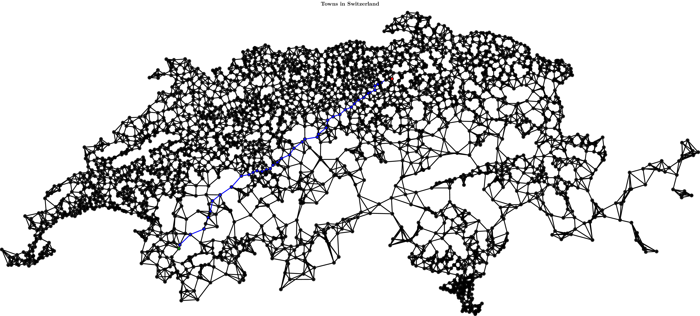

A simple header-only C++ library that aims to showcase and implement various data structures and algorithms that are based on graph theory.
The code is documented and built using Travis CI:
 
Details
Currently implemented is the following:
Data structures
- Graph class
- Storage format
- Adjacency Matrix
- Adjacency List
- conversion between the two
- Directed/Undirected graphs
- file input to add edges
- edges & nodes support individual colours
- edges & nodes support C++ STL conform iterators
- Initialization
- YAML input file constructor
- degree sequence (for undirected graphs)
Algorithms
- Closure
- Finding the connected component / transitive closure of a node
- DFS
- BFS
- Basic graph traversal
- finding vertices at the same distance from source
- Minimum spanning trees
- Graph properties
- Shortest Paths
- Dijkstra (distances + path)
- Floyd-Warshall (distances + path)
- Node centralities
- Degree
- Closeness
- Harmonic
- Miscellaneous
- Havel-Hakimi to verify whether a degree sequence is graphic
Installation
The following software is required:
- C++17
- Cmake
- Make
- Eigen
- MathGL
- lualatex (+ tikz-network package)
- convert (built in on linux)
Programs in this repository
To build all tests & examples, run tests.sh from within the root folder of this repository. Executables can then be found in the build/test and build/examples folders.
Tests
This repository features unit tests in the 'test' folder.
To build a specific test, run make.sh $1 where $1 is the name of a test.
Test names can be deduced as follows: test/Test_Color.cpp <-> make.sh Color
This will create executables in the build/test folder for you to run (make sure you navigate into that folder).
Alternatively you can directly run all tests by invoking ./test/test.sh from the root folder.
Examples
This repository also has a few example programs that demonstrate certain features of the library.
They can be found in the examples folder.
Example names can be deduced as follows: examples/SwitzerlandDijkstra.cpp <-> install.sh SwitzerlandDijkstra

To-Do list
- Document algorithm purpose in doxygen files
Hereafter, the term finding <sth.> stands for some combination of counting and outputting <sth.>
Data structures
- advanced initialization
- simple graph support
- multigraph support
- bipartite graphs
- combining and editing graphs post-initialization
- threshold graphs, split graphs
Algorithms
- BFS
- power graphs (for undirected graphs)
- Shortest Paths
- Graph properties
- cycles of specific length (e.g. triad census)
- eccentricity, radius, diameter
- Minimum spanning trees
- Prim
- Total # of spanning trees
- Connectivity
- Eulerian paths
- finding all possible walks from source to destination
- Network algorithms
- Edmonds-Karp or similar algorithm
- single source
- single sink
- multiple sink (reduce to single sink by adding supersink with edges to every sink)
- multi commodity
- Cliques
- Huffman tree w/ visualization
- Markov Chain
- hitting time
- commute time
- arrival probability
- ergodicity
- stationary distribution
- reducibility
- periodicity
- node centralities
- Betweenness
- Eigenvector
- Katz
- PageRank
- Split graph
- find constructing degree sequence
- computing splittance
- Bipartite graphs
- Testing for bipartiteness
- 2-coloring
- vertex cover
 1.8.6
1.8.6